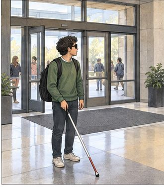
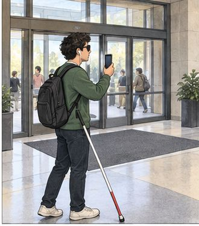

AS-IS
Without Navi
01 / Entrance
Where am I starting?
The user enters an unfamiliar mapped building and cannot confirm the starting point.
Navi · Accessible indoor navigation
A navigation concept for blind and low-vision users. Confirm where you are, say where you want to go, and hear the next step through mapped indoor spaces.
Team 2 · Fall 2026 · Concept prototype
01 / The prototype
Select a screen to explore what Navi would say and do at that point in a trip.
01 / Listening
Activate Navi with the configured supported shortcut, say a destination, and confirm the building, floor, and room before a route is chosen.
02 / Guiding
Follow spoken distance, stop, and turn instructions along the confirmed route. The proposed experience supports fastest, familiar, and avoid-stairs preferences where eligible routes exist.
03 / Paused
Guidance pauses when the camera view becomes unclear. Correct the view, then say resume; Navi rechecks camera and location before continuing.
04 / Arrived
Navi announces arrival when the confirmed location matches the mapped destination entrance. Say stop to end the navigation session.
Concept screen designs from the Team 2 presentation, prepared as transparent phone mockups. These illustrate the planned app experience.
02 / AS-IS & TO-BE
An illustrative journey from a building entrance to the library on floor 2.

01 / Entrance
The user enters an unfamiliar mapped building and cannot confirm the starting point.

01 / Confirm
Double press. Confirm the lobby location and “Library, floor 2.”
Step 1 of 6 · Entrance
| Stage | AS-IS | TO-BE |
|---|---|---|
| 1. Entrance | The user enters an unfamiliar mapped building and cannot confirm the starting point. | Double press. Confirm the lobby location and “Library, floor 2.” |
| 2. Route choice | Similar corridors make the turn toward the library uncertain. | Choose avoid-stairs. Hear the next turn on the eligible elevator route. |
| 3. Obstruction | A cart blocks the corridor. The user stops and reassesses with a cane. | “Stop. A cart is ahead.” Pause until the path clears or a detour is confirmed. |
| 4. Recovery | The user asks staff where to find the elevator and library floor. | If the view fails: “Pause. Clear and face the camera forward.” Say resume after checks pass. |
| 5. Floor change | After the elevator trip, the user must establish the new floor and heading. | At the elevator exit, confirm floor 2 and heading before another turn. |
| 6. Arrival | Staff help identify the library entrance. Arrival depends on local assistance. | Match the mapped library entrance and announce arrival. Say stop. |
Illustrative storyboard from our presentation; this is a proposed experience, not a recorded user trial.
03 / Voice interaction
The proposed experience supports short voice commands throughout a trip. Select one to see the intended response.
Directional guidance pauses until the user resumes or ends the trip.
04 / Project documents
The plan, presentation, and requirements behind the Navi concept. Preview directly from Drive or open the file.
05 / The people
The University of Texas at Dallas